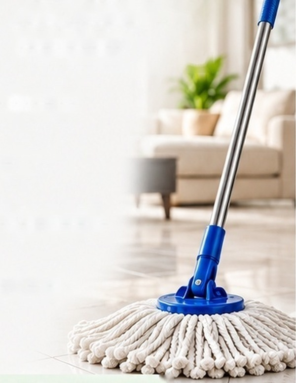

Heavy-Duty Floor Cleaning Mop
Effective cleaning for every corner.
- Highly absorbent cotton loop head
- Sturdy steel handle
- 360° clip mechanism for easy manoeuvring
- Grabs loose hair and fine dust
Care tip: Rinse and hang to dry after every use to maintain fibre longevity.